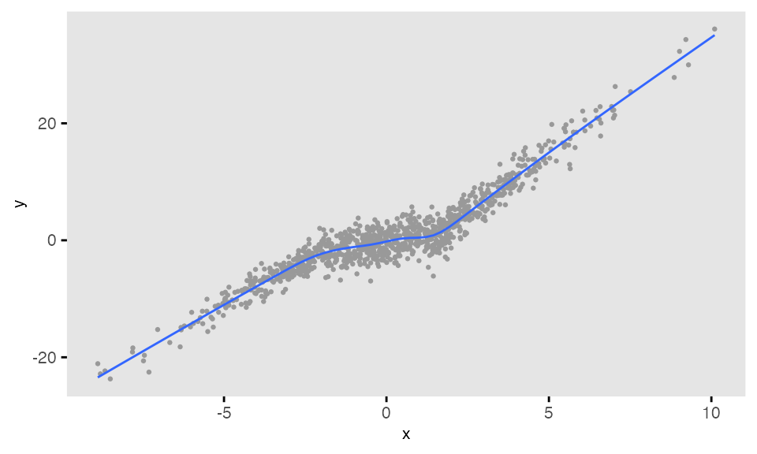

The simstudy package is a collection of functions that
allows users to generate simulated data sets to explore modeling
techniques or better understand data generating processes. The user
defines the distributions of individual variables, specifies
relationships between covariates and outcomes, and generates data based
on these specifications. The final data sets can represent randomized
control trials, repeated measure designs, cluster-randomized trials, or
naturally observed data processes. Other complexities that can be added
include survival data, correlated data, factorial study designs, step
wedge designs, and missing data processes.
Simulation using simstudy has two fundamental steps. The
user (1) defines the data elements of a data set and
(2) generates the data based on these definitions.
Additional functionality exists to simulate observed or randomized
treatment assignment/exposures, to create
longitudinal/panel data, to create
multi-level/hierarchical data, to create data sets with
correlated variables based on a specified covariance
structure, to merge data sets, to create data sets with
missing data, and to create non-linear relationships
with underlying spline curves.
The overarching philosophy of simstudy is to create data
generating processes that mimic the typical models used to fit those
types of data. So, the parameterization of some of the data generating
processes may not follow the standard parameterizations for the specific
distributions. For example, in simstudy
gamma-distributed data are generated based on the specification
of a mean
(or
)
and a dispersion
,
rather than shape
and rate
parameters that more typically characterize the gamma
distribution. When we estimate the parameters, we are modeling
(or some function of
),
so we should explicitly recover the simstudy parameters
used to generate the model - illuminating the relationship between the
underlying data generating processes and the models.
This introduction provides a brief overview to the basics of defining and generating data, including treatment or exposure variables. Subsequent sections in this vignette provide more details on these processes. For information on more elaborate data generating mechanisms, please refer to other vignettes in this package that provide more detailed descriptions.
The key to simulating data in simstudy is the creation
of a series of data definition tables that look like this:
| varname | formula | variance | dist | link |
|---|---|---|---|---|
| age | 10 | 2 | normal | identity |
| female | -2 + age * 0.1 | 0 | binary | logit |
| visits | 1.5 - 0.2 * age + 0.5 * female | 0 | poisson | log |
These definition tables can be generated in two ways. One option is
to use any external editor that allows the creation of .csv files, which
can be read in with a call to defRead. An alternative is to
make repeated calls to the function defData. This script
builds a definition table internally:
def <- defData(varname = "age", dist = "normal", formula = 10,
variance = 2)
def <- defData(def, varname = "female", dist = "binary",
formula = "-2 + age * 0.1", link = "logit")
def <- defData(def, varname = "visits", dist = "poisson",
formula = "1.5 - 0.2 * age + 0.5 * female", link = "log")The data definition table includes a row for each variable that is to
be generated, and has the following fields: varname*,
formula, variance, dist, and
link. varname provides the name of the
variable to be generated. formula is either a value or
string representing any valid R formula (which can include function
calls) that in most cases defines the mean of the distribution.
variance is a value or string that specifies either the
variance or other parameter that characterizes the distribution; the
default is 0. dist is defines the distribution of the
variable to be generated; the default is normal. The
link is a function that defines the relationship of the
formula with the mean value, and can either identity,
log, or logit, depending on the distribution; the
default is identity.
If using defData to create the definition table, the
first call to defData without specifying a definition name
(in this example the definition name is def) creates a
new data.table with a single row. An additional row is
added to the table def each time the function
defData is called. Each of these calls is the definition of
a new field in the data set that will be generated.
After the data set definitions have been created, a new data set with
observations can be created with a call to function
genData. In this example, 1,000
observations are generated using the data set definitions in
def, and then stored in the object
dd:
## Key: <id>
## id age female visits
## <int> <num> <int> <int>
## 1: 1 9.78 0 0
## 2: 2 10.81 0 0
## 3: 3 8.86 0 1
## 4: 4 9.83 1 1
## 5: 5 10.58 0 0
## ---
## 996: 996 8.87 1 2
## 997: 997 10.27 0 0
## 998: 998 6.84 0 1
## 999: 999 9.28 0 2
## 1000: 1000 10.80 1 2If no data definition is provided, a simple data set is created with just id’s.
genData(1000)## Key: <id>
## id
## <int>
## 1: 1
## 2: 2
## 3: 3
## 4: 4
## 5: 5
## ---
## 996: 996
## 997: 997
## 998: 998
## 999: 999
## 1000: 1000In many instances, the data generation process will involve a
treatment or exposure. While it is possible to generate a treatment or
exposure variable directly using the data definition process,
trtAssign and trtObserve offer the ability to
generate more involved types of study designs. In particular, with
trtAssign, balanced and stratified designs are
possible.
## Key: <id>
## id age female visits rx
## <int> <num> <int> <int> <int>
## 1: 1 9.78 0 0 3
## 2: 2 10.81 0 0 1
## 3: 3 8.86 0 1 3
## 4: 4 9.83 1 1 3
## 5: 5 10.58 0 0 3
## ---
## 996: 996 8.87 1 2 2
## 997: 997 10.27 0 0 3
## 998: 998 6.84 0 1 1
## 999: 999 9.28 0 2 1
## 1000: 1000 10.80 1 2 3
study1[, .N, keyby = .(female, rx)]## Key: <female, rx>
## female rx N
## <int> <int> <int>
## 1: 0 1 249
## 2: 0 2 248
## 3: 0 3 248
## 4: 1 1 85
## 5: 1 2 85
## 6: 1 3 85This section elaborates on the data definition process to provide more details on how to create data sets.
The data definition table for a new data set is constructed
sequentially. As each new row or variable is added, the formula (and in
some cases the variance) can refer back to a previously defined
variable. The first row by necessity cannot refer to another variable,
so the formula must be a specific value (i.e. not a string formula).
Starting with the second row, the formula can either be a value or any
valid R equation with quotes and can include any variables
previously defined.
In the definition we created above, the probability being female is a function of age, which was previously defined. Likewise, the number of visits is a function of both age and female. Since age is the first row in the table, we had to use a scalar to define the mean.
def <- defData(varname = "age", dist = "normal", formula = 10,
variance = 2)
def <- defData(def, varname = "female", dist = "binary",
formula = "-2 + age * 0.1", link = "logit")
def <- defData(def, varname = "visits", dist = "poisson",
formula = "1.5 - 0.2 * age + 0.5 * female", link = "log")Formulas can include R functions or user-defined
functions. Here is an example with a user-defined function
myinv and the log function from base
R:
myinv <- function(x) {
1/x
}
def <- defData(varname = "age", formula = 10, variance = 2,
dist = "normal")
def <- defData(def, varname = "loginvage", formula = "log(myinv(age))",
variance = 0.1, dist = "normal")
genData(5, def)## Key: <id>
## id age loginvage
## <int> <num> <num>
## 1: 1 10.31 -2.58
## 2: 2 7.90 -1.94
## 3: 3 9.83 -1.93
## 4: 4 9.10 -2.42
## 5: 5 10.18 -2.21Replication is an important aspect of data simulation - it is often
very useful to generate data under different sets of assumptions.
simstudy facilitates this in at least two different ways.
There is function updateDef which allows row by row changes
of a data definition table. In this case, we are changing the formula of
loginvage in def so that it uses the
function log10 instead of log:
def10 <- updateDef(def, changevar = "loginvage", newformula = "log10(myinv(age))")
def10## varname formula variance dist link
## <char> <char> <char> <char> <char>
## 1: age 10 2 normal identity
## 2: loginvage log10(myinv(age)) 0.1 normal identity
genData(5, def10)## Key: <id>
## id age loginvage
## <int> <num> <num>
## 1: 1 9.82 -0.338
## 2: 2 10.97 -0.633
## 3: 3 11.79 -1.267
## 4: 4 9.74 -0.882
## 5: 5 10.11 -1.519A more powerful feature of simstudy that allows for
dynamic definition tables is the external reference capability through
the double-dot notation. Any variable reference in a formula
that is preceded by “..” refers to an externally defined variable:
age_effect <- 3
def <- defData(varname = "age", formula = 10, variance = 2,
dist = "normal")
def <- defData(def, varname = "agemult", formula = "age * ..age_effect",
dist = "nonrandom")
def## varname formula variance dist link
## <char> <char> <num> <char> <char>
## 1: age 10 2 normal identity
## 2: agemult age * ..age_effect 0 nonrandom identity
genData(2, def)## Key: <id>
## id age agemult
## <int> <num> <num>
## 1: 1 9.69 29.1
## 2: 2 9.63 28.9But the real power of dynamic definition is seen in the context of iteration over multiple values:
age_effects <- c(0, 5, 10)
list_of_data <- list()
for (i in seq_along(age_effects)) {
age_effect <- age_effects[i]
list_of_data[[i]] <- genData(2, def)
}
list_of_data## [[1]]
## Key: <id>
## id age agemult
## <int> <num> <num>
## 1: 1 11.4 0
## 2: 2 10.7 0
##
## [[2]]
## Key: <id>
## id age agemult
## <int> <num> <num>
## 1: 1 11.3 56.6
## 2: 2 11.2 56.1
##
## [[3]]
## Key: <id>
## id age agemult
## <int> <num> <num>
## 1: 1 9.32 93.2
## 2: 2 10.62 106.2The foundation of generating data is the assumptions we make about
the distribution of each variable. simstudy provides 15
types of distributions, which are listed in the following table:
| name | formula | string/value | format | variance | identity | log | logit |
|---|---|---|---|---|---|---|---|
| beta | mean | both | - | dispersion | X | - | X |
| binary | probability | both | - | - | X | X | X |
| binomial | probability | both | - | # of trials | X | X | X |
| categorical | probability | string | p_1;p_2;…;p_n | a;b;c | X | - | X |
| clusterSize | total N | both | - | dispersion | X | - | - |
| custom | function | string | - | arguments | X | - | - |
| exponential | mean | both | - | - | X | X | - |
| gamma | mean | both | - | dispersion | X | X | - |
| mixture | formula | string | x_1 | p_1 + … + x_n | p_n | - | X | - | - |
| negBinomial | mean | both | - | dispersion | X | X | - |
| nonrandom | formula | both | - | - | X | - | - |
| normal | mean | both | - | variance | X | - | - |
| noZeroPoisson | mean | both | - | - | X | X | - |
| poisson | mean | both | - | - | X | X | - |
| trtAssign | ratio | string | r_1;r_2;…;r_n | stratification | X | X | - |
| uniform | range | string | from ; to | - | X | - | - |
| uniformInt | range | string | from ; to | - | X | - | - |
A beta distribution is a continuous data distribution that
takes on values between
and
.
The formula specifies the mean
(with the ‘identity’ link) or the log-odds of the mean (with the ‘logit’
link). The scalar value in the ‘variance’ represents the dispersion
value
.
The variance
for a beta distributed variable will be
.
Typically, the beta distribution is specified using two shape parameters
and
,
where
and
.
A binary distribution is a discrete data distribution that
takes values
or
.
(It is more conventionally called a Bernoulli distribution, or
is a binomial distribution with a single trial
.)
The formula represents the probability (with the ‘identity’
link), the relative risk (with the ‘log’ link), or the log odds (with
the ‘logit’ link) that the variable takes the value of 1. The mean of
this distribution is
,
and variance
is
.
A binomial distribution is a discrete data distribution that represents the count of the number of successes given a number of trials. The formula specifies the probability of success (with the ‘identity’ link), the relative risk (with the ‘log’ link), or the log odds (with the ‘logit’ link) that the variable takes the value of 1. and the variance field is used to specify the number of trials . Given a value of , the mean of this distribution is , and the variance is .
A categorical distribution is a discrete data distribution
taking on values from
to
,
with each value representing a specific category, and there are
categories. The categories may or may not be ordered. For a categorical
variable with
categories, the formula is a string of probabilities that
sum to 1, each separated by a semi-colon:
.
is the probability of the random variable falling in category
,
is the probability of category
,
etc. The probabilities can be specified as functions of other variables
previously defined. The helper function genCatFormula is an
easy way to create different probability strings. The link
options are identity or logit. The
variance field is optional an allows to provide categories
other than the default 1...n in the same format as
formula: “a;b;c”. Numeric variance Strings
(e.g. “50;100;200”) will be converted to numeric when possible. All
probabilities will be rounded to 1e12 decimal points to prevent possible
rounding errors.
The clusterSize distribution allocates a total sample size N (specified in the formula argument) across the k rows of the data.table such that the sum of the rows equals N. If the dispersion argument is set to 0, the allocation to each row is N/k, with some rows getting an increment of 1 to ensure that the sum is N. It is possible to relax the assumption of balanced cluster sizes by setting dispersion > 0. As the dispersion increases, the variability of cluster sizes across clusters increases.
Custom distributions can be specified in defData and
defDataAdd by setting the argument dist to
“custom”. When defining a custom distribution, provide the name of the
user-defined function as a string in the formula argument. The
arguments of the custom function are listed in the variance
argument, separated by commas and formatted as “arg_1 =
val_form_1, arg_2 = val_form_2,
,
arg_K = val_form_K”. The arg_k’s represent the names
of the arguments passed to the customized function, where
ranges from
to
.
Values or formulas can be used for each val_form_k. If formulas
are used, ensure that the variables have been previously generated.
Double dot notation is available in specifying value_formula_k.
One important requirement of the custom function is that the parameter
list used to define the function must include an argument”n =
n”, but do not include
in the definition as part of defData or
defDataAdd.
An exponential distribution is a continuous data
distribution that takes on non-negative values. The formula
represents the mean
(with the ‘identity’ link) or log of the mean (with the ‘log’ link). The
variance argument does not apply to the
exponential distribution. The variance
is
.
A gamma distribution is a continuous data distribution that
takes on non-negative values. The formula specifies the
mean
(with the ‘identity’ link) or the log of the mean (with the ‘log’ link).
The variance field represents a dispersion value
.
The variance
is is
.
The mixture distribution is a mixture of other predefined
variables, which can be defined based on any of the other available
distributions. The formula is a string structured with a sequence of
variables
and probabilities
:
.
All of the
’s
are required to have been previously defined, and the probabilities must
sum to
(i.e. ).
The result of generating from a mixture is the value
with probability
.
The variance and link fields do not apply to
the mixture distribution.
A negative binomial distribution is a discrete data
distribution that represents the number of successes that occur in a
sequence of Bernoulli trials before a specified number of
failures occurs. It is often used to model count data more generally
when a Poisson distribution is not considered appropriate; the
variance of the negative binomial distribution is larger than the
Poisson distribution. The formula specifies the
mean
or the log of the mean. The variance field represents a dispersion value
.
The variance
will be
.
Deterministic data can be “generated” using the nonrandom
distribution. The formula explicitly represents the value
of the variable to be generated, without any uncertainty. The
variance and link fields do not apply to
nonrandom data generation.
A normal or Gaussian distribution is a continuous
data distribution that takes on values between
and
.
The formula represents the mean
and the variance represents
.
The link field is not applied to the normal
distribution.
The noZeroPoisson distribution is a discrete data
distribution that takes on positive integers. This is a truncated
poisson distribution that excludes
.
The formula specifies the parameter
(link is ‘identity’) or log() (link is log). The
variance field does not apply to this distribution. The
mean
of this distribution is
and the variance
is
.
We are not typically interested in modeling data drawn from this
distribution (except in the case of a hurdle model), but it is
useful to generate positive count data where it is not desirable to have
any
values.
The poisson distribution is a discrete data distribution
that takes on non-negative integers. The formula specifies
the mean
(link is ‘identity’) or log of the mean (link is log). The
variance field does not apply to this distribution. The
variance
is
itself.
The trtAssign distribution is an implementation of the
trtAssign functionality in the context of the
defData workflow. Sometimes, it might be convenient to
assign treatment or group membership while defining other variables. The
formula specifies the relative allocation to the different
groups. For example three-arm randomization with equal allocation to
each arm would be specified as “1;1;1”. The
variance field defines the stratification variables, and
would be specified as “s_1;s_2” if s_1 and
s_2 are the stratification variables. The link
field is used to indicate if the allocations should be perfectly
balanced; if nothing is specified (and link defaults to
identity), the allocation will be balanced; if link is
specified to be different from identity, then the allocation
will not be balanced.
A uniform distribution is a continuous data distribution
that takes on values from
to
,
where
>
,
and they both lie anywhere on the real number line. The
formula is a string with the format “a;b”, where a
and b are scalars or functions of previously defined variables.
The variance and link arguments do not apply
to the uniform distribution.
A uniform integer distribution is a discrete data
distribution that takes on values from
to
,
where
>
,
and they both lie anywhere on the integer number line. The
formula is a string with the format “a;b”, where a
and b are scalars or functions of previously defined variables.
The variance and link arguments do not apply
to the uniform integer distribution.
defRepeat allows us to specify multiple versions of a
variable based on a single set of distribution assumptions. The function
will add nvar variables to the data definition
table, each of which will be specified with a single set of distribution
assumptions. The names of the variables will be based on the
prefix argument and the distribution assumptions are
specified as they are in the defData function. Calls to
defRepeat can be integrated with calls to
defData.
def <- defRepeat(nVars = 4, prefix = "g", formula = "1/3;1/3;1/3",
variance = 0, dist = "categorical")
def <- defData(def, varname = "a", formula = "1;1", dist = "trtAssign")
def <- defRepeat(def, 3, "b", formula = "5 + a", variance = 3,
dist = "normal")
def <- defData(def, "y", formula = "0.10", dist = "binary")
def## varname formula variance dist link
## <char> <char> <num> <char> <char>
## 1: g1 1/3;1/3;1/3 0 categorical identity
## 2: g2 1/3;1/3;1/3 0 categorical identity
## 3: g3 1/3;1/3;1/3 0 categorical identity
## 4: g4 1/3;1/3;1/3 0 categorical identity
## 5: a 1;1 0 trtAssign identity
## 6: b1 5 + a 3 normal identity
## 7: b2 5 + a 3 normal identity
## 8: b3 5 + a 3 normal identity
## 9: y 0.10 0 binary identityUntil this point, we have been generating new data sets, building them up from scratch. However, it is often necessary to generate the data in multiple stages so that we would need to add data as we go along. For example, we may have multi-level data with clusters that contain collections of individual observations. The data generation might begin with defining and generating cluster-level variables, followed by the definition and generation of the individual-level data; the individual-level data set would be adding to the cluster-level data set.
There are several important functions that facilitate the
augmentation of data sets. defDataAdd,
defRepeatAdd, and readDataAdd are similar to
their counterparts defData, defRepeat, and
readData, respectively; they create data definition tables
that will be used by the function addColumns. The formulas
in these “add-ing” functions are permitted to refer to fields
that exist in the data set to be augmented, so all variables need not be
defined in the current definition able.
d1 <- defData(varname = "x1", formula = 0, variance = 1,
dist = "normal")
d1 <- defData(d1, varname = "x2", formula = 0.5, dist = "binary")
d2 <- defRepeatAdd(nVars = 2, prefix = "q", formula = "5 + 3*rx",
variance = 4, dist = "normal")
d2 <- defDataAdd(d2, varname = "y", formula = "-2 + 0.5*x1 + 0.5*x2 + 1*rx",
dist = "binary", link = "logit")
dd <- genData(5, d1)
dd <- trtAssign(dd, nTrt = 2, grpName = "rx")
dd## Key: <id>
## id x1 x2 rx
## <int> <num> <int> <int>
## 1: 1 -1.3230 1 0
## 2: 2 -0.0494 0 1
## 3: 3 -0.4064 1 0
## 4: 4 -0.5562 1 0
## 5: 5 -0.0941 0 1
dd <- addColumns(d2, dd)
dd## Key: <id>
## id x1 x2 rx q1 q2 y
## <int> <num> <int> <int> <num> <num> <int>
## 1: 1 -1.3230 1 0 4.589 5.70 0
## 2: 2 -0.0494 0 1 9.829 11.74 1
## 3: 3 -0.4064 1 0 2.117 4.47 0
## 4: 4 -0.5562 1 0 0.798 3.24 0
## 5: 5 -0.0941 0 1 7.601 6.98 0In certain situations, it might be useful to define a data
distribution conditional on previously generated data in a way that is
more complex than might be easily handled by a single formula.
defCondition creates a special table of definitions and the
new variable is added to an existing data set by calling
addCondition. defCondition specifies a
condition argument that will be based on a variable that already exists
in the data set. The new variable can take on any simstudy
distribution specified with the appropriate formula,
variance, and link arguments.
In this example, the slope of a regression line of on varies depending on the value of the predictor :
d <- defData(varname = "x", formula = 0, variance = 9, dist = "normal")
dc <- defCondition(condition = "x <= -2", formula = "4 + 3*x",
variance = 2, dist = "normal")
dc <- defCondition(dc, condition = "x > -2 & x <= 2", formula = "0 + 1*x",
variance = 4, dist = "normal")
dc <- defCondition(dc, condition = "x > 2", formula = "-5 + 4*x",
variance = 3, dist = "normal")
dd <- genData(1000, d)
dd <- addCondition(dc, dd, newvar = "y")## Warning: Using `size` aesthetic for lines was deprecated in ggplot2 3.4.0.
## ℹ Please use `linewidth` instead.
## This warning is displayed once every 8 hours.
## Call `lifecycle::last_lifecycle_warnings()` to see where this warning was
## generated.